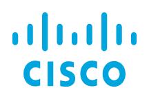
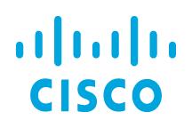
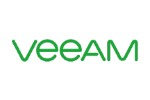
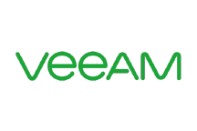

Welcome to ThoughtCodes
Have you ever imagined getting all IT solution under one roof? If not and even if you are searching for your IT partner, you are in the right place.
Thoughtcodes worked with many reputed international integrated infrastructure solutions providers globally. Thoughtcodes is dedicated to proffering agile, efficient and profitable IT solutions to small and big business houses all around the globe. Pioneers in IT and networking we provide a myriad of solutions that every company needs from their start days till their lifetime. Offering a wide range of IT solutions we have converted ourselves as a single window solution provider for the industry. As the world evolves, so do we with our technologies, we are driven by our zeal for developing perfect solutions which not only satisfy our clients but also delight them.
Our work always revolves around our core values. We don’t just work for your company, we become a part of it. We understand your business from the inside out and produce the most effective solutions to suit your goals and objectives, not just to generate monetary gains, hence when we take any project on our arms we always make sure that we are equally participating in your growth.

Our Work Ethics
ThoughtCodes has a broadened service spectrum to meet your all-time requirements, we are seeking to transform the way people use technology to communicate, conduct business, manage resources, gain information and carry out transactions. The most important factor due to which we are standing constant in this competitive market is our core value and the mutual trust between our clients, team, and management.
Our process-centric approach to projects, our people, and our work culture all combine to form a close-knitted relationship with our clients which helps us deliver software and applications that are successful even before they are launched. Our customers know this very well and opt to stay with us.
Our Vision Ethics
We have a clear vision to always remain a client-centric, best-in-class IT solution provider, we want to empower more and more people surroundings with our technology solution.
Our Mission Ethics
Our ultimate mission is to make a happy client base, because for us our clients are our asset, and evolve with the upcoming technologies.
Our Mission Ethics
Be Authentic: Uniqueness and authenticity is the first and foremost thing we maintain in our solutions, we don’t invest our energy in copying other, instead, we put it to create solutions that are unique and our own.
Be Transparent: Transparency is what we maintain during the whole process of a project, we believe to keep things clear to the client as well as within our team, we run our organization without a question mark. Our work culture is very pellucid.
Be Result Oriented: At the end of the day what matters to us is a good result, we are highly resulting oriented, this can be seen in our can-do attitude, we all as teamwork to attain each and every goal which are given by our clients to us. Hence we are determined for our work.
Be Self Learner: We are very curious about every little thing which we don’t know, we don’t say no to anything, instead even if we don’t know anything we learn and implement things, We timely update our knowledge bank to keep a pace with latest technology trends. Hence we are very primitive.


 



 
